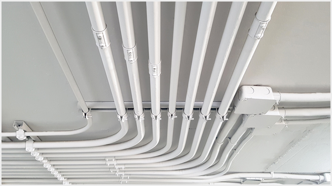

Living in a smart home without wires hanging is a wonderful thing and we provide possible solutions for you to live according to the standard of your comfort. We mind of your safety from the underground to the roof top of your house. Since we live in a modern age where we rely on electricity which is vital starting from lights to any electrical device but to make that happen your wiring has to be highly protected and we and the good news is that you are at the right site for your solution. We are also mindful of the way your wires Follow by providing you with PVC conduit bends that are in the angles of your need such that your wiring can fit in your plan.
